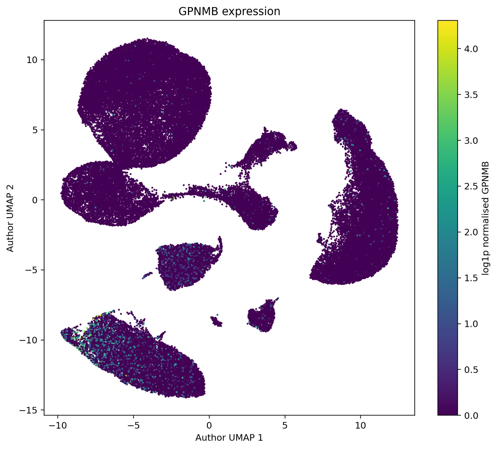
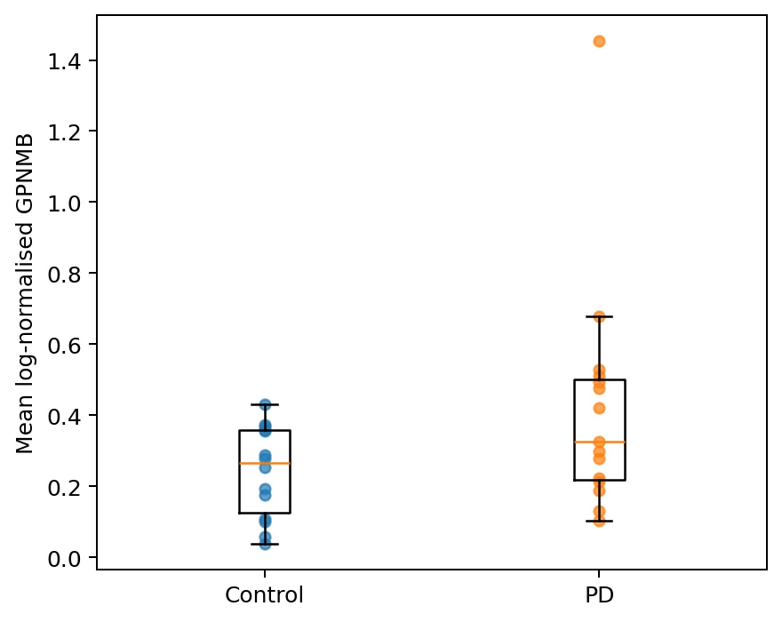
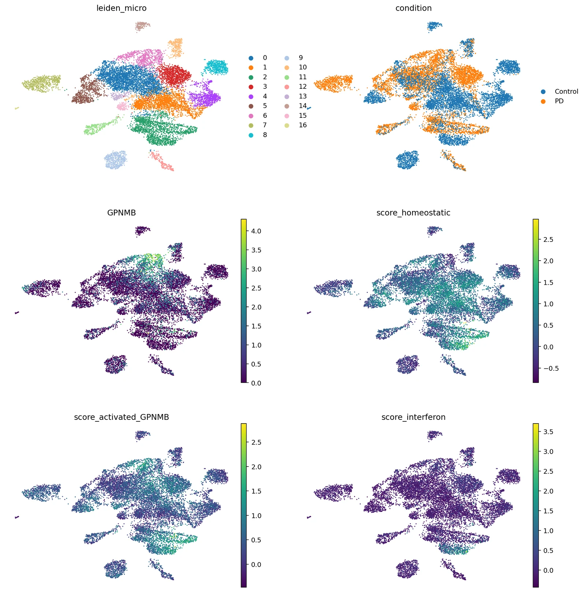

Single-nucleus transcriptomics · Parkinson’s disease
GPNMB in Parkinson’s disease: single-nucleus RNA-seq re-analysis
A focused re-analysis of human substantia nigra pars compacta single-nucleus RNA-seq to find where GPNMB is expressed, whether its microglial expression differs between Parkinson’s disease and controls, and whether independent published analyses point the same way. It adds cell-type context to the genetic evidence from my dissertation.

Where is GPNMB expressed, and does it change in PD?
Genetic evidence can prioritise a protein, but it doesn’t say which cells matter. I asked in which substantia nigra cell populations GPNMB is expressed, and how its expression and the associated microglial programme differ between Parkinson’s disease and controls. GPNMB was a pre-specified target, not a hit picked from transcriptome-wide results.
Donors, not nuclei, are the replicates
Cell-level differential expression can overstate evidence when thousands of nuclei from the same donor are treated as independent. The analysis rules were fixed before looking at disease effects and stored in config.yaml so changes stay auditable.
- Formal PD–control tests use donor-level pseudobulk counts from raw integers; cell-level plots are descriptive only.
- At least 30 nuclei per donor and at least 5 eligible donors per condition before testing.
- Primary design
~ age + sex + condition, deliberately not overfitting a 29-donor cohort. - Harmony off by default: it can help embeddings but can also erase real donor biology, and never feeds DE counts.
- External validation kept separate from discovery.
GPNMB is a microglial gene in the substantia nigra


| Cell type | Donors | Median donor expression | Detection fraction | Nuclei |
|---|---|---|---|---|
| Microglia | 29 | 0.2890 | 0.1844 | 12,995 |
| OPC | 29 | 0.1732 | 0.1717 | 6,644 |
| Vascular | 29 | 0.0801 | 0.0620 | 1,560 |
| Astrocytes | 29 | 0.0233 | 0.0169 | 20,710 |
| Neurons | 29 | 0.0213 | 0.0269 | 6,196 |
| Oligodendrocytes | 29 | 0.0082 | 0.0075 | 35,032 |
About two-fold higher in PD microglia, nominally
Donor-level pseudobulk on 14 control and 15 PD donors gave log2FC +1.025 (SE 0.390; P = 0.00863), roughly 2.03-fold higher GPNMB in PD microglia. It does not survive transcriptome-wide FDR (0.218).
Broad microglial abundance was not detectably different between groups (propeller P = 0.587), so the higher signal isn’t simply more microglia in PD donors. Neuronal proportion was lower in PD (P = 0.009) but did not cross FDR < 0.05 (0.062).

Same direction, variable strength
| Dataset | Method | log2FC | P | FDR |
|---|---|---|---|---|
| GSE243639 (this analysis) | Donor-level pseudobulk DESeq2 | +1.025 | 0.00863 | 0.218 |
| GSE184950 / Wang | Donor-aware microglial MAST | +0.113 | 0.131 | 1.000 |
| Wang + Kamath + Smajic | Multi-dataset microglial pseudobulk | +0.933 | 0.00186 | 0.050 |
A full in-house rebuild of GSE184950 was explored but dropped: the public Seurat object lacks the final published labels needed for a defensible microglial pseudobulk. The validation step therefore extracts GPNMB directly from the published supplementary tables.
What it supports
- GPNMB expression concentrated in microglia.
- A positive, nominally significant PD effect in donor-level pseudobulk.
- Directional consistency across independent studies.
What it doesn’t show
- That GPNMB causes PD, or whether higher GPNMB is harmful or protective.
- A significant replication in GSE184950 alone.
- That a specific microglial state mediates the genetic association.